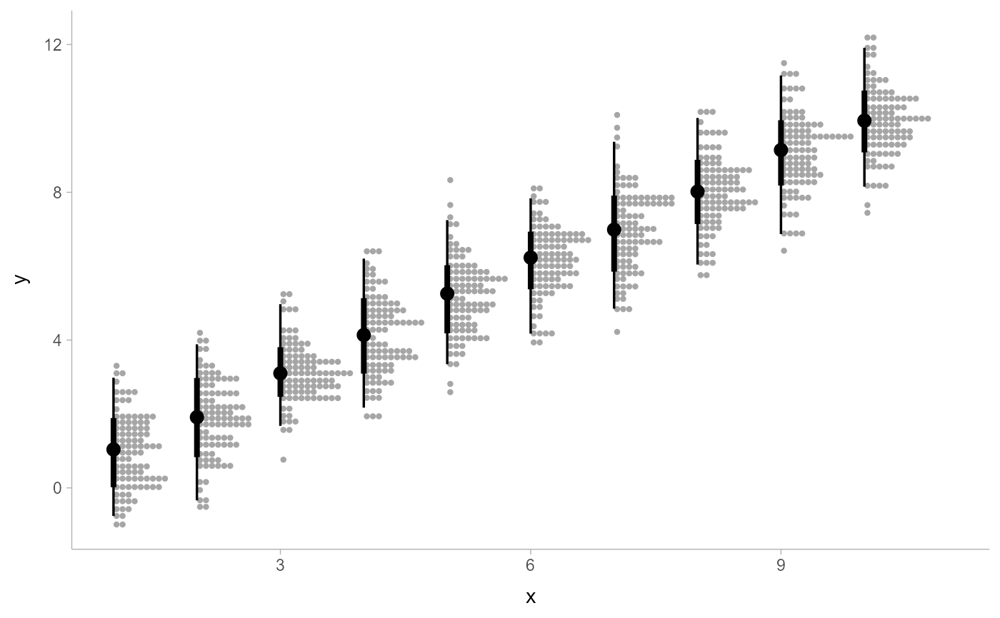
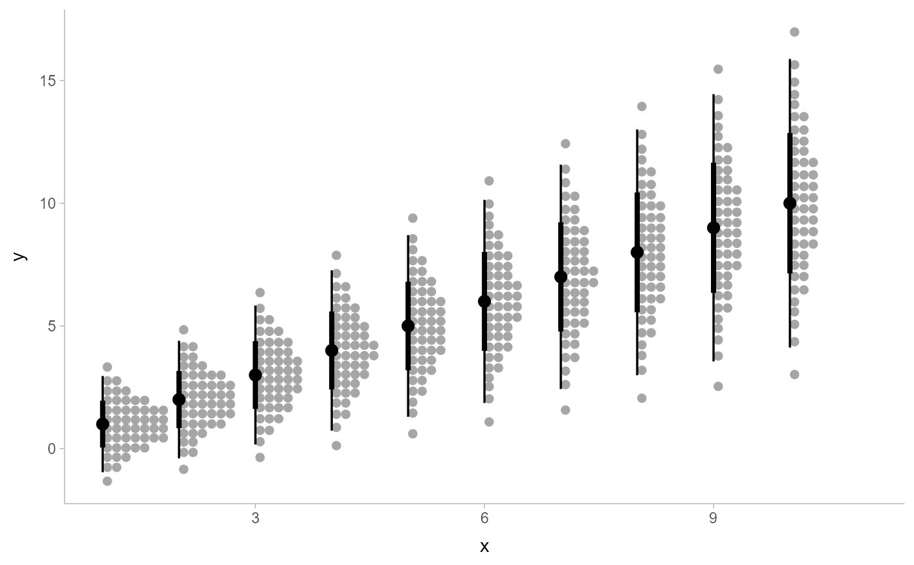

A combination of stat_slabinterval() and geom_dotsinterval() with sensible defaults
for making dots + point + interval plots. While geom_dotsinterval() is intended for use on data
frames that have already been summarized using a point_interval() function,
stat_dotsinterval() is intended for use directly on data frames of draws or of
analytical distributions, and will perform the summarization using a point_interval()
function. Geoms based on geom_dotsinterval() create dotplots that automatically determine a bin width that
ensures the plot fits within the available space. They can also ensure dots do not overlap.
Set of aesthetic mappings created by aes(). If specified and
inherit.aes = TRUE (the default), it is combined with the default mapping
at the top level of the plot. You must supply mapping if there is no plot
mapping.
The data to be displayed in this layer. There are three options:
If NULL, the default, the data is inherited from the plot
data as specified in the call to ggplot().
A data.frame, or other object, will override the plot
data. All objects will be fortified to produce a data frame. See
fortify() for which variables will be created.
A function will be called with a single argument,
the plot data. The return value must be a data.frame, and
will be used as the layer data. A function can be created
from a formula (e.g. ~ head(.x, 10)).
Use to override the default connection between
stat_dotsinterval() and geom_dotsinterval()
Position adjustment, either as a string, or the result of a call to a position adjustment function.
Setting this equal to "dodge" (position_dodge()) or "dodgejust" (position_dodgejust()) can be useful if
you have overlapping geometries.
Other arguments passed to layer(). These are often aesthetics, used to set an aesthetic
to a fixed value, like colour = "red" or linewidth = 3 (see Aesthetics, below). They may also be
parameters to the paired geom/stat. When paired with the default geom, geom_dotsinterval(),
these include:
binwidthThe bin width to use for laying out the dots. One of:
NA (the default): Dynamically select the bin width based on the
size of the plot when drawn. This will pick a binwidth such that the
tallest stack of dots is at most scale in height (ideally exactly scale
in height, though this is not guaranteed).
A length-1 (scalar) numeric or unit object giving the exact bin width.
A length-2 (vector) numeric or unit object giving the minimum and maximum desired bin width. The bin width will be dynamically selected within these bounds.
If the value is numeric, it is assumed to be in units of data. The bin width
(or its bounds) can also be specified using unit(), which may be useful if
it is desired that the dots be a certain point size or a certain percentage of
the width/height of the viewport. For example, unit(0.1, "npc") would make
dots that are exactly 10% of the viewport size along whichever dimension the
dotplot is drawn; unit(c(0, 0.1), "npc") would make dots that are at most
10% of the viewport size (while still ensuring the tallest stack is less than
or equal to scale).
dotsizeThe width of the dots relative to the binwidth. The default,
1.07, makes dots be just a bit wider than the bin width, which is a
manually-tuned parameter that tends to work well with the default circular
shape, preventing gaps between bins from appearing to be too large visually
(as might arise from dots being precisely the binwidth). If it is desired
to have dots be precisely the binwidth, set dotsize = 1.
stackratioThe distance between the center of the dots in the same
stack relative to the dot height. The default, 1, makes dots in the same
stack just touch each other.
layoutThe layout method used for the dots:
"bin" (default): places dots on the off-axis at the midpoint of their bins as in the classic Wilkinson dotplot.
This maintains the alignment of rows and columns in the dotplot. This layout is slightly different from the
classic Wilkinson algorithm in that: (1) it nudges bins slightly to avoid overlapping bins and (2) if
the input data are symmetrical it will return a symmetrical layout.
"weave": uses the same basic binning approach of "bin", but places dots in the off-axis at their actual
positions (unless overlaps = "nudge", in which case overlaps may be nudged out of the way). This maintains
the alignment of rows but does not align dots within columns.
"hex": uses the same basic binning approach of "bin", but alternates placing dots + binwidth/4 or
- binwidth/4 in the off-axis from the bin center. This allows hexagonal packing by setting a stackratio
less than 1 (something like 0.9 tends to work).
"swarm": uses the "compactswarm" layout from beeswarm::beeswarm(). Does not maintain alignment of rows or
columns, but can be more compact and neat looking, especially for sample data (as opposed to quantile
dotplots of theoretical distributions, which may look better with "bin", "weave", or "hex").
overlapsHow to handle overlapping dots or bins in the "bin",
"weave", and "hex" layouts (dots never overlap in the "swarm" layout).
For the purposes of this argument, dots are only considered to be overlapping
if they would be overlapping when dotsize = 1 and stackratio = 1; i.e.
if you set those arguments to other values, overlaps may still occur.
One of:
"keep": leave overlapping dots as they are. Dots may overlap
(usually only slightly) in the "bin", "weave", and "hex" layouts.
"nudge": nudge overlapping dots out of the way. Overlaps are avoided
using a constrained optimization which minimizes the squared distance of
dots to their desired positions, subject to the constraint that adjacent
dots do not overlap.
smoothSmoother to apply to dot positions. One of:
A function that takes a numeric vector of dot positions and returns a
smoothed version of that vector, such as smooth_bounded(),
smooth_unbounded(), smooth_discrete(), or smooth_bar()`.
A string indicating what smoother to use, as the suffix to a function
name starting with smooth_; e.g. "none" (the default) applies
smooth_none(), which simply returns the given vector without
applying smoothing.
Smoothing is most effective when the smoother is matched to the support of
the distribution; e.g. using smooth_bounded(bounds = ...).
overflowHow to handle overflow of dots beyond the extent of the geom
when a minimum binwidth (or an exact binwidth) is supplied.
One of:
"keep": Keep the overflow, drawing dots outside the geom bounds.
"compress": Compress the layout. Reduces the binwidth to the size necessary
to keep the dots within bounds, then adjusts stackratio and dotsize so that
the apparent dot size is the user-specified minimum binwidth times the
user-specified dotsize.
If you find the default layout has dots that are too small, and you are okay
with dots overlapping, consider setting overflow = "compress" and supplying
an exact or minimum dot size using binwidth.
verboseIf TRUE, print out the bin width of the dotplot. Can be useful
if you want to start from an automatically-selected bin width and then adjust it
manually. Bin width is printed both as data units and as normalized parent
coordinates or "npc"s (see unit()). Note that if you just want to scale the
selected bin width to fit within a desired area, it is probably easier to use
scale than to copy and scale binwidth manually, and if you just want to
provide constraints on the bin width, you can pass a length-2 vector to binwidth.
interval_size_domainA length-2 numeric vector giving the minimum and maximum of the values of the size and linewidth aesthetics that will be
translated into actual sizes for intervals drawn according to interval_size_range (see the documentation
for that argument.)
interval_size_rangeA length-2 numeric vector. This geom scales the raw size aesthetic values when drawing interval and point
sizes, as they tend to be too thick when using the default settings of scale_size_continuous(), which give
sizes with a range of c(1, 6). The interval_size_domain value indicates the input domain of raw size
values (typically this should be equal to the value of the range argument of the scale_size_continuous()
function), and interval_size_range indicates the desired output range of the size values (the min and max of
the actual sizes used to draw intervals). Most of the time it is not recommended to change the value of this
argument, as it may result in strange scaling of legends; this argument is a holdover from earlier versions
that did not have size aesthetics targeting the point and interval separately. If you want to adjust the
size of the interval or points separately, you can also use the linewidth or point_size
aesthetics; see scales.
fatten_pointA multiplicative factor used to adjust the size of the point relative to the size of the
thickest interval line. If you wish to specify point sizes directly, you can also use the point_size
aesthetic and scale_point_size_continuous() or scale_point_size_discrete(); sizes
specified with that aesthetic will not be adjusted using fatten_point.
Setting this to a value other than NA
will produce a quantile dotplot: that is, a dotplot of quantiles from the sample or distribution
(for analytical distributions, the default of NA is taken to mean 100 quantiles). The value of
quantiles determines the number
of quantiles to plot. See Kay et al. (2016) and Fernandes et al. (2018) for more information on quantile dotplots.
A function from the point_interval() family (e.g., median_qi,
mean_qi, mode_hdi, etc), or a string giving the name of a function from that family
(e.g., "median_qi", "mean_qi", "mode_hdi", etc; if a string, the caller's environment is searched
for the function, followed by the ggdist environment). This function determines the point summary
(typically mean, median, or mode) and interval type (quantile interval, qi;
highest-density interval, hdi; or highest-density continuous interval, hdci). Output will
be converted to the appropriate x- or y-based aesthetics depending on the value of orientation.
See the point_interval() family of functions for more information.
The .width argument passed to point_interval: a vector of probabilities to use
that determine the widths of the resulting intervals. If multiple probabilities are provided,
multiple intervals per group are generated, each with a different probability interval (and
value of the corresponding .width and level generated variables).
Whether this geom is drawn horizontally or vertically. One of:
NA (default): automatically detect the orientation based on how the aesthetics
are assigned. Automatic detection works most of the time.
"horizontal" (or "y"): draw horizontally, using the y aesthetic to identify different
groups. For each group, uses the x, xmin, xmax, and thickness aesthetics to
draw points, intervals, and slabs.
"vertical" (or "x"): draw vertically, using the x aesthetic to identify different
groups. For each group, uses the y, ymin, ymax, and thickness aesthetics to
draw points, intervals, and slabs.
For compatibility with the base ggplot naming scheme for orientation, "x" can be used as an alias
for "vertical" and "y" as an alias for "horizontal" (ggdist had an orientation parameter
before base ggplot did, hence the discrepancy).
If FALSE, the default, missing values are removed with a warning. If TRUE, missing
values are silently removed.
logical. Should this layer be included in the legends?
NA, the default, includes if any aesthetics are mapped.
FALSE never includes, and TRUE always includes.
It can also be a named logical vector to finely select the aesthetics to
display.
If FALSE, overrides the default aesthetics,
rather than combining with them. This is most useful for helper functions
that define both data and aesthetics and shouldn't inherit behaviour from
the default plot specification, e.g. borders().
A ggplot2::Stat representing a dots + point + interval geometry which can
be added to a ggplot() object.
The dots family of stats and geoms are similar to geom_dotplot() but with a number of differences:
Dots geoms act like slabs in geom_slabinterval() and can be given x positions (or y positions when
in a horizontal orientation).
Given the available space to lay out dots, the dots geoms will automatically determine how many bins to use to fit the available space.
Dots geoms use a dynamic layout algorithm that lays out dots from the center out if the input data are symmetrical, guaranteeing that symmetrical data results in a symmetrical plot. The layout algorithm also prevents dots from overlapping each other.
The shape of the dots in these geoms can be changed using the slab_shape aesthetic (when using the
dotsinterval family) or the shape or slab_shape aesthetic (when using the dots family)
Stat and geoms include in this family include:
geom_dots(): dotplots on raw data. Ensures the dotplot fits within available space by reducing the size
of the dots automatically (may result in very small dots).
geom_swarm() and geom_weave(): dotplots on raw data with defaults intended to create "beeswarm" plots.
Used side = "both" by default, and sets the default dot size to the same size as geom_point()
(binwidth = unit(1.5, "mm")), allowing dots to overlap instead of getting very small.
stat_dots(): dotplots on raw data, distributional objects, and posterior::rvar()s
geom_dotsinterval(): dotplot + interval plots on raw data with already-calculated
intervals (rarely useful directly)
stat_dotsinterval(): dotplot + interval plots on raw data, distributional objects,
and posterior::rvar()s (will calculate intervals for you)
stat_dots() and stat_dotsinterval(), when used with the quantiles argument,
are particularly useful for constructing quantile dotplots, which can be an effective way to communicate uncertainty
using a frequency framing that may be easier for laypeople to understand (Kay et al. 2016, Fernandes et al. 2018).
To visualize sample data, such as a data distribution, samples from a
bootstrap distribution, or a Bayesian posterior, you can supply samples to
the x or y aesthetic.
To visualize analytical distributions, you can use the xdist or ydist
aesthetic. For historical reasons, you can also use dist to specify the distribution, though
this is not recommended as it does not work as well with orientation detection.
These aesthetics can be used as follows:
xdist, ydist, and dist can be any distribution object from the distributional
package (dist_normal(), dist_beta(), etc) or can be a posterior::rvar() object.
Since these functions are vectorized,
other columns can be passed directly to them in an aes() specification; e.g.
aes(dist = dist_normal(mu, sigma)) will work if mu and sigma are columns in the
input data frame.
dist can be a character vector giving the distribution name. Then the arg1, ... arg9
aesthetics (or args as a list column) specify distribution arguments. Distribution names
should correspond to R functions that have "p", "q", and "d" functions; e.g. "norm"
is a valid distribution name because R defines the pnorm(), qnorm(), and dnorm()
functions for Normal distributions.
See the parse_dist() function for a useful way to generate dist and args
values from human-readable distribution specs (like "normal(0,1)"). Such specs are also
produced by other packages (like the brms::get_prior function in brms); thus,
parse_dist() combined with the stats described here can help you visualize the output
of those functions.
The following variables are computed by this stat and made available for
use in aesthetic specifications (aes()) using the after_stat()
function or the after_stat argument of stage():
x or y: For slabs, the input values to the slab function.
For intervals, the point summary from the interval function. Whether it is x or y depends on orientation
xmin or ymin: For intervals, the lower end of the interval from the interval function.
xmax or ymax: For intervals, the upper end of the interval from the interval function.
.width: For intervals, the interval width as a numeric value in [0, 1].
For slabs, the width of the smallest interval containing that value of the slab.
level: For intervals, the interval width as an ordered factor.
For slabs, the level of the smallest interval containing that value of the slab.
pdf: For slabs, the probability density function (PDF).
If options("ggdist.experimental.slab_data_in_intervals") is TRUE:
For intervals, the PDF at the point summary; intervals also have pdf_min and pdf_max
for the PDF at the lower and upper ends of the interval.
cdf: For slabs, the cumulative distribution function.
If options("ggdist.experimental.slab_data_in_intervals") is TRUE:
For intervals, the CDF at the point summary; intervals also have cdf_min and cdf_max
for the CDF at the lower and upper ends of the interval.
f: For slabs, the output values from the slab function (such as the PDF, CDF, or CCDF),
determined by slab_type.
n: For slabs, the number of data points summarized into that slab. If the slab was created from
an analytical distribution via the xdist, ydist, or dist aesthetic, n will be Inf.
The dots+interval stats and geoms have a wide variety of aesthetics that control
the appearance of their three sub-geometries: the dots (aka the slab), the
point, and the interval.
These stats support the following aesthetics:
x: x position of the geometry (when orientation = "vertical"); or sample data to be summarized
(when orientation = "horizontal" with sample data).
y: y position of the geometry (when orientation = "horizontal"); or sample data to be summarized
(when orientation = "vertical" with sample data).
xdist: When using analytical distributions, distribution to map on the x axis: a distributional
object (e.g. dist_normal()) or a posterior::rvar() object.
ydist: When using analytical distributions, distribution to map on the y axis: a distributional
object (e.g. dist_normal()) or a posterior::rvar() object.
dist: When using analytical distributions, a name of a distribution (e.g. "norm"), a
distributional object (e.g. dist_normal()), or a posterior::rvar() object. See Details.
args: Distribution arguments (args or arg1, ... arg9). See Details.
In addition, in their default configuration (paired with geom_dotsinterval())
the following aesthetics are supported by the underlying geom:
Dots-specific (aka Slab-specific) aesthetics
family: The font family used to draw the dots.
order: The order in which data points are stacked within bins. Can be used to create the effect of
"stacked" dots by ordering dots according to a discrete variable. If omitted (NULL), the
value of the data points themselves are used to determine stacking order. Only applies when
layout is "bin" or "hex", as the other layout methods fully determine both x and y positions.
side: Which side to place the slab on. "topright", "top", and "right" are synonyms
which cause the slab to be drawn on the top or the right depending on if orientation is "horizontal"
or "vertical". "bottomleft", "bottom", and "left" are synonyms which cause the slab
to be drawn on the bottom or the left depending on if orientation is "horizontal" or
"vertical". "topleft" causes the slab to be drawn on the top or the left, and "bottomright"
causes the slab to be drawn on the bottom or the right. "both" draws the slab mirrored on both
sides (as in a violin plot).
scale: What proportion of the region allocated to this geom to use to draw the slab. If scale = 1,
slabs that use the maximum range will just touch each other. Default is 0.9 to leave some space.
justification: Justification of the interval relative to the slab, where 0 indicates bottom/left
justification and 1 indicates top/right justification (depending on orientation). If justification
is NULL (the default), then it is set automatically based on the value of side: when side is
"top"/"right" justification is set to 0, when side is "bottom"/"left"
justification is set to 1, and when side is "both" justification is set to 0.5.
datatype: When using composite geoms directly without a stat (e.g. geom_slabinterval()), datatype is used to
indicate which part of the geom a row in the data targets: rows with datatype = "slab" target the
slab portion of the geometry and rows with datatype = "interval" target the interval portion of
the geometry. This is set automatically when using ggdist stats.
Interval-specific aesthetics
xmin: Left end of the interval sub-geometry (if orientation = "horizontal").
xmax: Right end of the interval sub-geometry (if orientation = "horizontal").
ymin: Lower end of the interval sub-geometry (if orientation = "vertical").
ymax: Upper end of the interval sub-geometry (if orientation = "vertical").
Point-specific aesthetics
shape: Shape type used to draw the point sub-geometry.
Color aesthetics
colour: (or color) The color of the interval and point sub-geometries.
Use the slab_color, interval_color, or point_color aesthetics (below) to
set sub-geometry colors separately.
fill: The fill color of the slab and point sub-geometries. Use the slab_fill
or point_fill aesthetics (below) to set sub-geometry colors separately.
alpha: The opacity of the slab, interval, and point sub-geometries. Use the slab_alpha,
interval_alpha, or point_alpha aesthetics (below) to set sub-geometry colors separately.
colour_ramp: (or color_ramp) A secondary scale that modifies the color
scale to "ramp" to another color. See scale_colour_ramp() for examples.
fill_ramp: A secondary scale that modifies the fill
scale to "ramp" to another color. See scale_fill_ramp() for examples.
Line aesthetics
linewidth: Width of the line used to draw the interval (except with geom_slab(): then
it is the width of the slab). With composite geometries including an interval and slab,
use slab_linewidth to set the line width of the slab (see below). For interval, raw
linewidth values are transformed according to the interval_size_domain and interval_size_range
parameters of the geom (see above).
size: Determines the size of the point. If linewidth is not provided, size will
also determines the width of the line used to draw the interval (this allows line width and
point size to be modified together by setting only size and not linewidth). Raw
size values are transformed according to the interval_size_domain, interval_size_range,
and fatten_point parameters of the geom (see above). Use the point_size aesthetic
(below) to set sub-geometry size directly without applying the effects of
interval_size_domain, interval_size_range, and fatten_point.
stroke: Width of the outline around the point sub-geometry.
linetype: Type of line (e.g., "solid", "dashed", etc) used to draw the interval
and the outline of the slab (if it is visible). Use the slab_linetype or
interval_linetype aesthetics (below) to set sub-geometry line types separately.
Slab-specific color/line override aesthetics
slab_fill: Override for fill: the fill color of the slab.
slab_colour: (or slab_color) Override for colour/color: the outline color of the slab.
slab_alpha: Override for alpha: the opacity of the slab.
slab_linewidth: Override for linwidth: the width of the outline of the slab.
slab_linetype: Override for linetype: the line type of the outline of the slab.
slab_shape: Override for shape: the shape of the dots used to draw the dotplot slab.
Interval-specific color/line override aesthetics
interval_colour: (or interval_color) Override for colour/color: the color of the interval.
interval_alpha: Override for alpha: the opacity of the interval.
interval_linetype: Override for linetype: the line type of the interval.
Point-specific color/line override aesthetics
point_fill: Override for fill: the fill color of the point.
point_colour: (or point_color) Override for colour/color: the outline color of the point.
point_alpha: Override for alpha: the opacity of the point.
point_size: Override for size: the size of the point.
Deprecated aesthetics
slab_size: Use slab_linewidth.
interval_size: Use interval_linewidth.
Other aesthetics (these work as in standard geoms)
width
height
group
See examples of some of these aesthetics in action in vignette("dotsinterval").
Learn more about the sub-geom override aesthetics (like interval_color) in the
scales documentation. Learn more about basic ggplot aesthetics in
vignette("ggplot2-specs").
Kay, M., Kola, T., Hullman, J. R., & Munson, S. A. (2016). When (ish) is My Bus? User-centered Visualizations of Uncertainty in Everyday, Mobile Predictive Systems. Conference on Human Factors in Computing Systems - CHI '16, 5092--5103. doi:10.1145/2858036.2858558 .
Fernandes, M., Walls, L., Munson, S., Hullman, J., & Kay, M. (2018). Uncertainty Displays Using Quantile Dotplots or CDFs Improve Transit Decision-Making. Conference on Human Factors in Computing Systems - CHI '18. doi:10.1145/3173574.3173718 .
See geom_dotsinterval() for the geom underlying this stat.
See vignette("dotsinterval") for a variety of examples of use.
Other dotsinterval stats:
stat_dots()
library(dplyr)
library(ggplot2)
library(distributional)
theme_set(theme_ggdist())
# ON SAMPLE DATA
tibble(x = 1:10) %>%
group_by_all() %>%
do(tibble(y = rnorm(100, .$x))) %>%
ggplot(aes(x = x, y = y)) +
stat_dotsinterval()

# ON ANALYTICAL DISTRIBUTIONS
# Vectorized distribution types, like distributional::dist_normal()
# and posterior::rvar(), can be used with the `xdist` / `ydist` aesthetics
tibble(
x = 1:10,
sd = seq(1, 3, length.out = 10)
) %>%
ggplot(aes(x = x, ydist = dist_normal(x, sd))) +
stat_dotsinterval(quantiles = 50)
